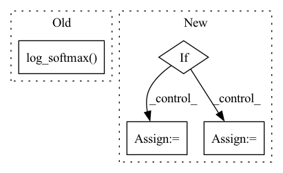

Pattern ID :1872
Before Change
batch_size, num_classes = pred.shape[:2]
y_hot = move_to(torch.zeros(pred.shape), device).scatter_(1, targets.unsqueeze(1) , 1.0)
y_smooth = (1 - self.alpha) * y_hot + self.alpha / num_classes
loss = torch.sum(- y_smooth * torch.nn.functional.log_softmax( pred, -1) , -1).sum()
if self.reduction == "mean":
loss /= batch_sizeAfter Change
if self.weight is not None:
self.weight = move_to(self.weight, device)
if self.ignore_index is not None:
target = torch.argmax(target, dim=1)
loss = nn.functional.cross_entropy(pred, target, weight=self.weight, ignore_index=self.ignore_index)
else:
loss = nn.functional.cross_entropy(pred, target, weight=self.weight)
loss_dict = {"CE": loss.item()}
return loss, loss_dictIn pattern: SUPERPATTERN
Frequency: 3
Non-data size: 4
Instances Fragment ID: 13191368
Project Name: kaylode/theseus
Commit Name: b842d768df45af67b9f7ac5349f0a65cf607ddad
Time: 2022-09-27
Author: pmkhoi@selab.hcmus.edu.vn
File Name: theseus/semantic/losses/ce_loss.py
M Class Name: SmoothCELoss
N Class Name: SemanticCELoss
M Method Name: forward(4)
N Method Name: forward(4)
M Parent Class: nn.Module
N Parent Class: nn.Module
M File Name: theseus/semantic/losses/ce_loss.py
N File Name: theseus/semantic/losses/ce_loss.py
M Start Line: 42
M End Line: 53
N Start Line: 17
N End Line: 29
Before Change
input: [N, C]
target: [N, ]
logpt = F.log_softmax( input, dim=1)
pt = torch.exp(logpt)
logpt = (1-pt)**self.gamma * logpt
loss = F.nll_loss(logpt, target, self.weight,ignore_index=self.ignore_index)
return lossAfter Change
ce_loss = F.cross_entropy(inputs, targets, weight=self.weight, reduction="none")
p_t = torch.exp(-ce_loss)
loss = (1 - p_t)**self.gamma * ce_loss
if self.reduction == "mean":
loss = loss.mean()
elif self.reduction == "sum":
loss = loss.sum()
return loss
Fragment ID: 13191400
Project Name: muqiujun-ai/bert4pytorch
Commit Name: 169a074a051648e0c9cb0af37363e917da7243dd
Time: 2022-03-22
Author: zh@3752154
File Name: bert4pytorch/losses.py
M Class Name: FocalLoss
N Class Name: FocalLoss
M Method Name: forward(3)
N Method Name: forward(3)
M Parent Class: nn.Module
N Parent Class: nn.Module
M File Name: bert4pytorch/losses.py
N File Name: bert4pytorch/losses.py
M Start Line: 14
M End Line: 22
N Start Line: 12
N End Line: 20
Before Change
if samples is None:
return self.gumbel_softmax(logits, self._temperature, self._eps, hard=True)
else:
return -torch.sum(-samples * F.log_softmax( logits, -1) , -1)
After Change
gumbels = (logits + gumbels) / tau // ~Gumbel(logits,tau)
y_soft = gumbels.softmax(dim)
if hard:
// Straight through.
index = y_soft.max(dim, keepdim=True)[1]
y_hard = torch.zeros_like(logits, memory_format=torch.legacy_contiguous_format).scatter_(dim, index, 1.0)
ret = y_hard - y_soft.detach() + y_soft
else:
// Reparametrization trick.
ret = y_soft
return ret, y_soft
Fragment ID: 13191387
Project Name: xiaosu-zhu/mcquic
Commit Name: e12be331e275549e5b8a7ef6a7c8dbf6d4e387bf
Time: 2021-04-08
Author: xiaosu.zhu@outlook.com
File Name: src/mcqc/layers/gumbelSoftmax.py
M Class Name: GumbelSoftmax
N Class Name: GumbelSoftmax
M Method Name: forward(5)
N Method Name: forward(4)
M Parent Class: nn.Module
N Parent Class: nn.Module
M File Name: src/mcqc/layers/gumbelSoftmax.py
N File Name: src/mcqc/layers/gumbelSoftmax.py
M Start Line: 40
M End Line: 44
N Start Line: 8
N End Line: 21